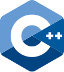
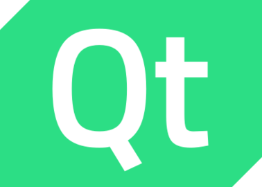
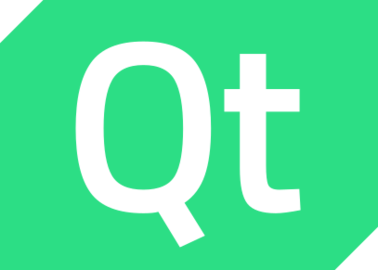

Rémi PEUCHOT

Du logiciel embarqué jusqu’aux interfaces utilisateurs, de l’informatique scientifique de pointe jusqu’à la gestion de base de données, j’ai développé avec succès de nombreux logiciels innovants pour des industries variées.
Les plus anciens tournent sans interruption depuis plus de 15 ans et continuent de rendre de fiers services à leurs utilisateurs.
 C/C++ Â Â  C# Â Â
C#  Python  Â
 Java  Â
Java  Â
 SQL Â Â
SQL Â Â  LabVIEW Â Â
LabVIEW Â Â
Linux  Windows  Â
 FreeRTOS Â Â
FreeRTOS Â Â
NVidia Jetson  Â
 ESP32 Â Â
ESP32  Microchip  Â
 Git  Â
Git  Docker  Â
 .NET   Qt  Â
.NET   Qt  Â
ROS Â Â
OpenCV Â Â
 Eigen  Â
Eigen   Teststand  Â
Teststand  Â
Voir ma page robotique dédiée.
D’une simple détection d’objet à une configuration complexe impliquant plusieurs caméras, je maîtrise les concepts fondamentaux de la vision par ordinateur :
En concevant des bancs de tests automatiques pour différents secteurs industriels, j’ai permis à ces entreprises de :
Mon expertise dans ce domaine s’est avérée bénéfique pour plusieurs industries :
Avec 20 ans d’expérience dans des contextes très variés, je maîtrise les compétences nécessaires pour produire du code de haute qualité :